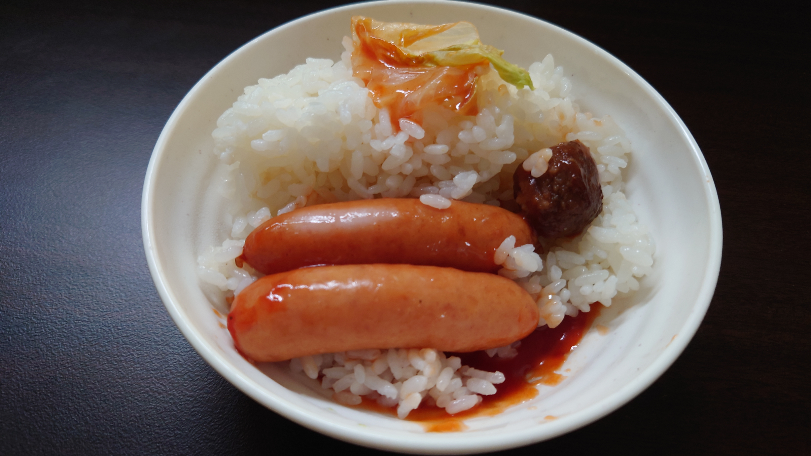

こんにちは、ザクザク食感です。
3週間ぶりくらいの更新
もう書き方忘れてしまって、今改行するために<br>じゃなくて\nって打ってしまった
変な時間に起きたので今日の振り返りをします
【ザクザク食感の一日】
18:00 退勤 寝落ち
23:53 起床 ニンダイ視聴
もう2Dマリオの新作は出ないと思っていたのに新作が10月には出るらしくて楽しみすぎる 新しいゲームの発売日を見るとそれまで生きなきゃなって思う
1:06 コインランドリーに行く
今日は出社日なのに部屋着しか残っていないので、仕方なくコインランドリーに行く 夏に着る服が本当にないから買わなくちゃいけないけどダルすぎて出かけられない……
3:14 帰宅 服をたたんで寝落ち
4:04 起床
4:23 起床
5:30 起床
出社日は睡眠のデッドラインがこの時間で、遅刻へのプレッシャーであんまり眠れない
まだ無遅刻無欠席だけど、いつ寝坊するかわからないので怖い
出社の日はお弁当をつくるようにしてる みんないいねくれるから嬉しい
でもその影で生まれている裏弁当のことを忘れちゃいけない

味はおいしい
7:36 出勤
ほんとは7:30に出るつもりだけど絶対こういう時間になってる でも早く会社に着いたらそれだけ損してることになるのでなるべくギリギリで行動したい
満員電車って本当に嫌すぎる 快速で止まらない駅だけに止まる逆快速がほしいってずっと思ってる
12:00 昼食
同じ研修班の人とご飯を食べる こういうとき、気まずくならないために当たり障りない話題がオートモードで出てくる
PASMOってオートチャージにしたいですよねとか会社の近くのラーメン屋さんおいしそうですよねとか梅雨っていつ明けるんでしょうねとか どうでもよすぎる
お弁当箱はあるけど水筒がないからカルピスを買ったけど、カルピスは水分補給にならない もう大人になってしまったのかもしれない……
15:23 脱走
ある程度進捗出たのでタバコを吸いに会社から脱出する
オフィスビル自体が全面禁煙なので、近所の公園にある喫煙所まで行く 片道10分ぐらいなのでかなり時間つぶれる
ここの喫煙所には同じビルの人がたくさんいて、カスのヌクモリティを感じる
ちょっと前の研修まではやったことある内容だったからだいぶ楽できたけど、今やってる研修は全然知らない言語なので手こずっている
DjangoっていうPythonのフレームワークをやっている 僕が今書いているこの記事をもっと楽につくるみたいな言語で、ずっと自分がやってきたことの上位互換を見せられているような感じがしてめっちゃ嫌
そもそも記事を直で書いているのがおかしいんですけどね 他人に見せられるソースコードじゃない
しかも公式ドキュメントが読みづらいし会社が用意した資料にも仕様以外書いていないのでスタックオーバーフローとか英語のブログを翻訳して自分で調べながら進めなきゃいけない
出社すると新卒研修を受けているディレクターの会話とかが聞こえてくることがあるけど、エクセルの関数がどうとかパワポに添付する画像はsvgじゃなきゃとか言ってて涙出る 同じ給料なら絶対そっちがいいじゃん
そうい場面にエンカウントしたくないからずっと爆音で音楽を聴いたりこうやって喫煙所に逃げたりしている
18:00 退勤
同じ研修班の同じ路線の人と帰る
あんまり話さないけどめっちゃオタクの同僚で、前にちょびっツっていうアニメをおすすめしてくれた
人間の形をしたパソコンがある世界のラブコメで、かなり昔の作品だけど今よく扱われているようなテーマ（ロボットの人権とか）の話ですごく面白かった
18:56 途中下車
そのまま帰ってもよかったけど、せっかく外に出たので途中の駅で降りてラーメン食べて帰る
雨降ってるけど免罪符として乗り換え1回分歩く
タンクトップに半ズボンのムキムキのお兄さんが一輪車のセグウェイに乗っていてめちゃくちゃ良かった
向かいから顔が2つある小学生が歩いてきて、オルトロスの小学生かと思ったら2人で1つのレインコートを着ているだけだった
20:12 帰りの駅につく
雨がかなり強くなってきたので電車で帰ろうと思ったら電車が遅延していた 初めて東京に来たときは人身事故！？ってなってたけど今は何も感じない 慣れってこわ……
別の路線は動いてるっぽかったのでそっちに行こうとしたら2回ホームを間違えた
20:56 帰宅 寝落ち
3:52 起床
また生活リズムを戻せなかった
今日寒すぎる どうなってるんだこの世界～～～！！！
それでは、さようなら。